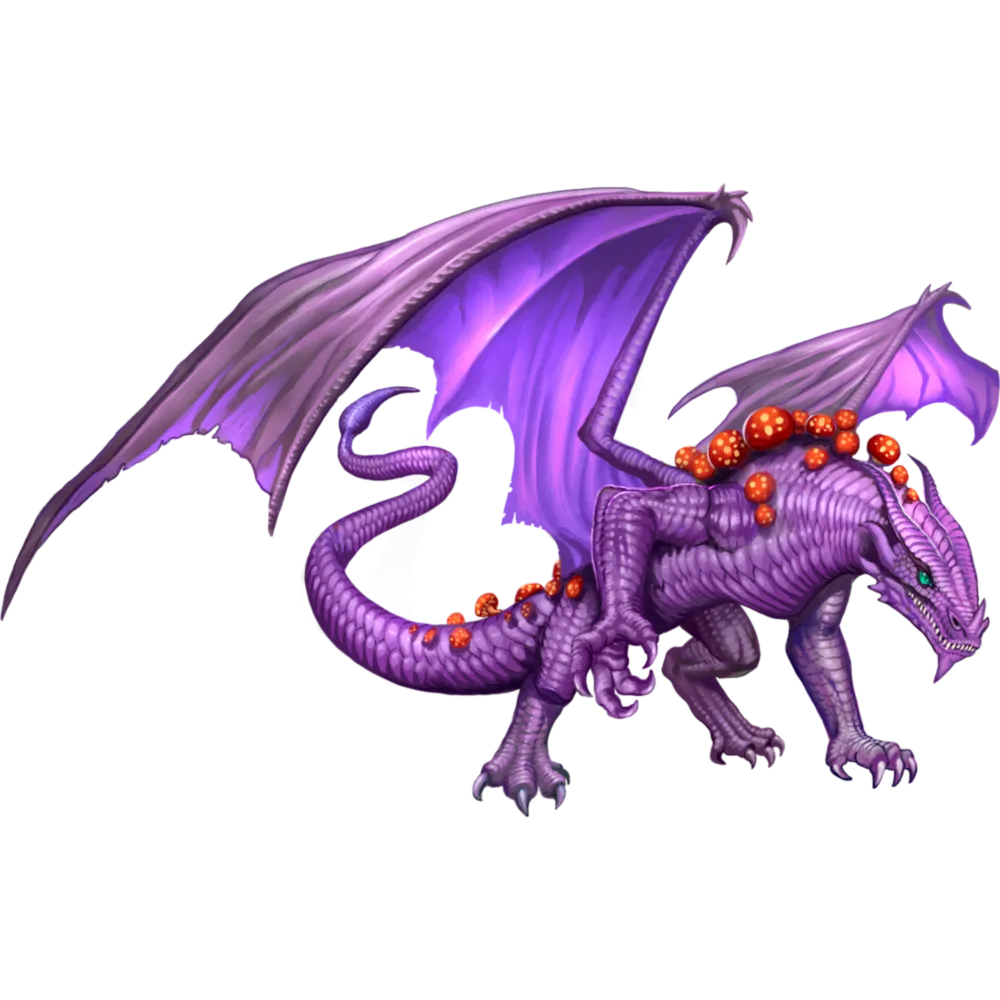
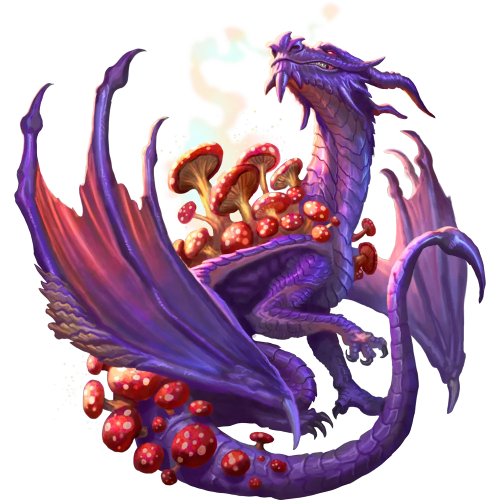

各年龄段数据卡
毒蕈龙是一类喜爱群居的真菌巨龙，脊背上还丛生着各式各样的额外菌菇。它们聚居在规模庞大的群落之中，无论是精致考究的饕餮盛宴还是腐烂发臭的残羹秽物，世间百般食物的气味与滋味都能令它们陶醉不已。部分学者认为，最早的毒蕈龙源于真菌莱希与巨龙的融合共生――当真菌孢子与巨龙的生理构造水乳交融后，便诞生了这一全新的共生生物。无论远古时代的真相究竟如何，现代毒蕈龙确是通过孢子繁衍生息的；只不过这一过程唯有在自然生命精华充沛、汇聚着被称为“生机精魄”（亦称自然精魂）之无形自然化身的地域方能成功。 科迪塞普图斯尽管许多毒蕈龙终生留守在自家群落之中，远古毒蕈龙科迪塞普图斯却因在群落附近的洞窟里创办了一家名为“坎迪达”的高档餐厅而声名远播。科迪塞普图斯以构思各式前卫精致的美食佳肴而著称，并为食客奉上最顶级的洞窟用餐氛围。不仅如此，坎迪达餐厅的菜单每日翻新，其中不少独创菜式更是可遇而不可求，往往只供应一次便成绝响。正因如此，再加上诸多其他魅力，四方老饕无不提前许久排起长队预订席位。 毒蕈龙在保护本群落同伴时往往无私忘我，但对外界多少有些抱团排外，面对外来生物时通常既算不上格外热情，也谈不上存心歹毒。当然，不同毒蕈龙个体的性情千差万别，其中也不乏性情凶残之辈――比起耐心等待智慧生物自然老死再去享用腐尸，它们更喜欢主动出击将活人吞入腹中。外来生物与毒蕈龙爆发冲突最常见的导火索，是对该巨龙所属的群落构成了明确而紧迫的威胁；不过面对来历不明又透着危险气息的陌生家伙，毒蕈龙有时也会主动挑起争端。虽说许多毒蕈龙会先礼后兵、开口交涉，但也有些家伙习惯先下手为强、打完了再审问（又或者干脆连问都省了――毕竟手下败将多半早已没法开口回答巨龙的任何问题）。 毒蕈龙与构成其生理躯干的真菌共享着诸多身体特征。举例来说，它们并非用肺呼吸，而是借由菌褶进行气体交换；而且除非特意集中精神暂时敛去光芒，否则它们体表的生物荧光真菌便会持续散发幽幽微光。恰如自然界中的真菌一般，毒蕈龙生命力极其顽强，几乎能在任何恶劣环境中扎根生存，哪怕在大多数动植物都难以维生的绝境里亦能安然无恙。 对于只听说过毒蕈龙爱吃腐烂食物的外人而言，它们身上最出人意料的特质莫过于其炉火纯青的厨艺直觉。它们敏锐地通晓哪些气味与口感是唯独自己喜爱而其他生物敬谢不敏的，因此只要它们乐意下厨，几乎能为任何种类的食客烹制出令人赞不绝口的美味佳肴。毒蕈龙时刻都在尝试不同的配方与食材搭配，在众多烹饪领域不断推陈出新。当然，它们最登峰造极的造诣当属发酵技艺――说穿了，发酵本就是一种受控的腐解过程。只不过不知为何，每当毒蕈龙兴致勃勃地向客人介绍某道菜肴“经过匠心工艺轻度腐解”时，其他生物听完总是一副反胃作呕的模样；为了避免宾客产生任何令人不快的误会，如今它们在异族宾朋在场的宴席上一律严格改口称之为“发酵”。 地下酿酒坊毒蕈龙在烹饪的每一个环节都会娴熟运用发酵技法，无论是腌渍泡菜、烘焙面点，还是制作奶酪与酸奶皆不例外。而在发酵技艺之中，有一个分支既可充当烹饪调料、本身又是绝佳饮品，利润更是丰厚得惊人――那便是酿酒。毒蕈龙习惯将酿造“料酒”与“饮用酒”的配方和工艺严格区分开来，其地下酿酒坊涉猎品类之广着实令人叹为观止：除了麦芽酒、拉格啤酒、葡萄酒与威士忌等其他族裔耳熟能详的常规美酒外，毒蕈龙还会用发酵蘑菇酿造独门菌酒。尽管有人觉得这种菌菇烈酒需要慢慢适应才品得出味道，但也有不少酒客对其醇厚风味与强劲后劲赞不绝口。 典型的毒蕈龙群落通常坐落在一座宽敞的地下巨窟，或是深藏地底的一连串相连洞穴之中；不过毒蕈龙适应力极强，只要确有必要或另有缘由，几乎在任何环境里都能安家落户。一座群落往往聚居着六头至二十四头不等的毒蕈龙――规模远远超过大多数其他巨龙支系的家族群体。只不过，同一群落里的许多成员实力相对较弱，充其量只具备青年毒蕈龙的水准。而实力更为强大的毒蕈龙到了某个阶段往往会萌生远游的冲动，犹如随风飘散的孢子一般从原群落“分芽”而出，远赴重洋寻觅原初能量充沛且附近聚有生机精魄的陌生地界，在那里建立起全新的群落。得益于深厚的家族观念，外出建立新群落的毒蕈龙每隔一段时间必定会回老家探亲，这使得各类消息与令人振奋的新食谱在看似孤立闭塞的巨龙社群间传播得远比外人想象中迅速得多。倘若你得罪了某座毒蕈龙群落，或许用不了多久便会惊讶地发现，远在1,000英里之外的毒蕈龙居然都已经听说了你的恶名。 留心那些蘑菇！不止一个自作聪明的劫掠者在席卷了钱币、艺术品与明面上的金银财宝之后，却对毒蕈龙群落里真正最值钱的至宝视而不见。毒蕈龙常在巢穴各处培育着稀有甚至经过魔法处理的珍奇蘑菇、毒蕈与其他真菌，其价值远远超过区区几枚金币；有些品种甚至是普天之下唯独这座毒蕈龙巢穴里才找得到的孤本菌株。当然，无论这些蘑菇是顶级食材、救命灵药、观赏奇珍，还是单纯的致命剧毒，通常都得请一位精通真菌学的行家出面，方能准确估量出它们的真正价值。 “漫游战厨”米兹凯莉特里乌斯除却成年后离家远行、前往广阔天地间开辟新群落的个体外，绝大多数毒蕈龙都是恋家不出的宅居派。但米兹凯莉特里乌斯却截然不同：当她成年离开群落的那一刻，展现在她眼前的是一片充满无限可能的辽阔世界。 米兹凯莉特里乌斯没有停下脚步建立自己的家族，而是一路向前，不停地游历、游历、再游历。每踏入一处新聚落，她都会发掘当地的风味特产与家传食谱，将其收入自己的珍藏，同时从自己日渐浩瀚的厨艺宝库中挑选出最契合当地气候与物产的烹饪妙想与之交换。岁月流转间，每当她故地重游、回到数百年前曾经路过的地方，往往会惊喜地发现当地已孕育出一种焕然一新的饮食文化――既保留了世代相传的传统风味，又巧妙融汇了她当年引入的新奇口感。能够亲口品尝以这种方式自然演化出的全新美味，令她欣喜若狂；在她眼中，这就好比一锅文火慢炖至臻完美的佳肴，最适合一头愿意耐心等待延迟满足的巨龙细细品味。 倘若米兹凯莉特里乌斯当真能就这样无忧无虑地漫步于各大洲之间，一连数百年静心浸淫于各地的饮食风貌，或许单凭她那包罗万象的世界美食百科全书式学识，或是那些足以撼动厨界根基、令帝王与贤者品尝后热泪盈眶的绝世食谱，便已足以让她名垂青史。 然而，命运却并未给她安排这样一条坦途。哪怕像米兹凯莉特里乌斯这般彬彬有礼、热忱好客又合群友善的巨龙，有时也免不了遭遇周遭之人的猜忌、敌视乃至赤裸裸的暴力袭击――排斥异己的恐惧、对巨龙伟力的忌惮，再加上觊觎巨龙宝库与贵重鳞甲躯干的贪婪，三者交织发酵成一锅恶毒的秽汤，随时可能朝巨龙泼洒而来。米兹凯莉特里乌斯自然也没能幸免。 仙环早在无尽岁月之前，最年长的太古毒蕈龙曾与精类缔结过古老而强大的盟约；精类委托它们在世界各地的特定地点构筑起一张庞大的仙环网络。大功告成之后，这些新生的仙环便为年轻一代的巨龙铺平了横跨诸界的旅途通道，这一传统一直延续至今。然而，当年精类为何点名要求在这些特定位置构筑仙环、它们又能从中获得何种利益，对整个龙族而言至今仍是一桩未解之谜。 在漫长的岁月里，她曾屡屡遭到五花八门的恶棍流氓、拦路强盗乃至心怀偏见的村民袭击、伏击与背叛；而每一次，她都凭借出人意料的奇谋妙策、可食用的魔法料理，以及自己独创的古怪招式，将来犯之敌逐一挫败。尽管与其他大多数巨龙种类相比，毒蕈龙的纯粹战力相对偏弱，她却依然将所有强敌悉数摆平，并由此赢得了响彻天下的传奇名号――“漫游战厨”。 随着岁月积淀、声名远播，“漫游战厨”的传奇故事在一国又一国之间广为流传；其中固然不乏添油加醋的夸张演绎，却也有不少听上去荒诞离奇、实则字字属实的真事。 颇具讽刺意味的是，这些广为流传的故事反过来成了保护米兹凯莉特里乌斯免遭袭击的护身符。自从她闯出“漫游战厨”的赫赫威名后，沿途渐渐有人能一眼认出她的身份：人们要么因故事里的正面形象而对她心生好感、欣然信赖，要么足够谨慎识相，不敢轻易招惹这位“漫游战厨”――免得沦为她那一长串匪夷所思乃至堪称奇迹的辉煌战绩里又一个倒霉反派。就米兹凯莉特里乌斯本人而言，声名远扬能帮她在冲突爆发前便消弭干戈，实在令她乐不可支。她格外钟爱自己的这个外号，部分原因正在于它的威慑奇效；虽说顶着这么一个杀气腾腾的头衔，可讽刺的是，只要能和平解决，她其实根本不喜欢动手打架。当然，这并不是说如今再也没人敢袭击她了――只不过这类不长眼的家伙如今已相当罕见，而且敢找上门来的通常都是实力不俗的劲敌，每逢交手，总能再添一段精彩绝伦的传奇佳话。 未知孢子随着年岁增长与力量精进，毒蕈龙体表会生出越来越多奇特罕见的菌菇，体内也会孕育出一系列威力强大却又变幻莫测的孢子，可在战斗中喷吐向敌人。就连巨龙自己也未必每次都能预判这些孢子会引发何种效应；不过当它们步入太古龙的实力巅峰时，便会渐渐掌握更为精妙的控制力，得以在一定程度上引导孢子的发作效果。虽然本书第38页表格中所列的效应代表了毒蕈龙族群的常见共性，但每头毒蕈龙个体都可能随着年龄与力量的增长演化出截然不同的独特孢子效果。若想为某头毒蕈龙设计专属自定义孢子表，其他巨龙传承的替代吐息武器效应往往是绝佳的灵感来源；而面对实力尤为强横的毒蕈龙，若其他扩展书籍中的巨龙吐息武器效应更为猛烈惊人，你也不妨直接加以选用。 实验飨宴：与科迪塞普图斯共餐 Experimental Dining: A Meal with Cordyceptus前些日子，我恰巧订到了前卫美食餐厅“坎迪达”的席位。正如我此前听闻的那样，餐厅设在一座宽敞的洞窟之中，而店主兼主厨――远古毒蕈龙科迪塞普图斯――不知施展了何种巧思，竟在丝毫不损此地原有“洞窟”野趣的前提下，营造出了精致高雅的用餐格调。他们以天然形成的钟乳石与石笋为基底，极具品味地装点并拓展出整片用餐空间，使得餐厅及其一应陈设仿佛如某种斑斓菌类或霉菌般从洞底自然生长而出。正如我这一比喻所暗示的，那里的餐桌皆被打造并装饰成了硕大而奇幻的蘑菇造型。 起初我心想，会不会是科迪塞普图斯及其手下员工认出了我便是声名显赫的巨龙学者卡利赞德雷克斯，为了讨我欢心、盼我在下一部学术著作中写上一笔盛赞，才特意对我如此优待。然而，我与邻桌几位食客简短攀谈后，他们向我保证这只是店里的常规服务；经我事后确认，他们也并非餐厅安插的“桩脚”――好吧，其中一位确实是棵树或灌木，但绝不是收受餐厅好处来替它吹捧的那种托儿。这让我得以确信自己体验到的正是餐厅的日常水准。事实上，我觉得他们说不定压根不知道我是谁！ 厨师们在呈上每一道佳肴时都极具风采与表现力，尽情展示其独特的摆盘、形态、风味与食材。科迪塞普图斯还亲自巡访每一桌，确保菜品尽善尽美、合乎宾客口味。每一道菜本身都令人拍案叫绝，但要数我最钟爱的一道，还得是用魔物肉块佐以几缕炼金灵药炖煮而成的浓汤――盛汤的蘑菇伞盖碗在饱吸汤汁精华后，本身亦可一并食下。 或许我当初真该去当个美食评论家？ ――永光贤者卡利赞德雷克斯 |
 毒蕈龙  毒蕈龙 |